CANTAB ThinkFast (Patient Materials)
Introduction
CANTAB ThinkFAST is a mobile application that has a collection of short_tasks_to determine different types of cognitive state, such as measuring working memory and processing speed (Figure 1), reaction times (Figure 2), attention and processing speed (Figure 3).
| 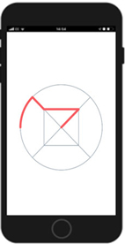 | 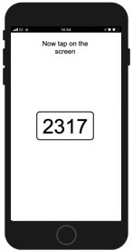 | 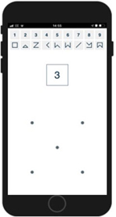 |
| Figure 1: n-back test | Figure 2: Psychomotor Vigilance Task (PVT) | Figure 3: Digit Symbol Substitution Test |
The ThinkFAST application will send you notifications at pre-determined times during the day to prompt and remind you to complete a short task. Although there are three tasks, you will be only asked to complete one per day and the tasks will change each day. Each task typically lasts only a few minutes. Each test requires different interactions, but broadly will involve opening the mobile application, and tapping on the screen to draw patterns or numbers.
How does this technology look?
CANTAB ThinkFAST is a mobile application that will appear as a green background and face in the icon when installed on your personal smartphone (Figure 1). ThinkFast uses an automated chat service to help authenticate your account, which you will need to do on your first clinical visit (Figure 2).
| 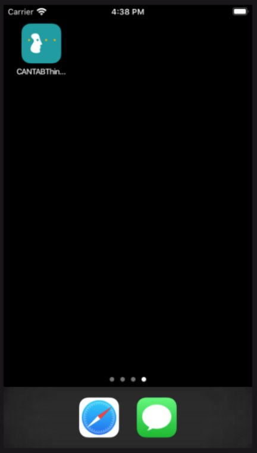 | 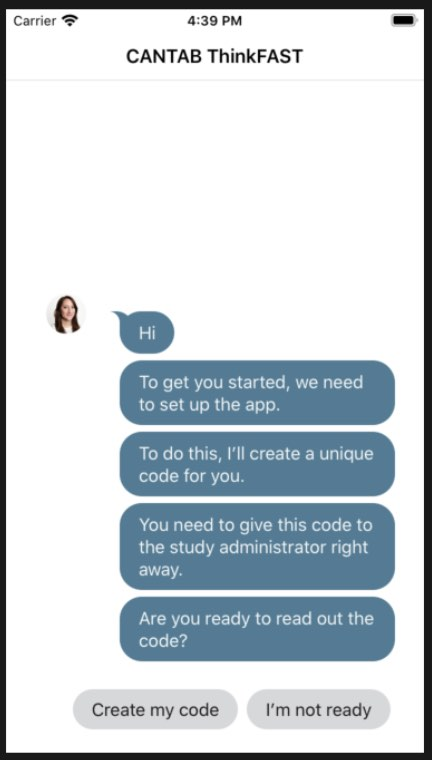 |
| Figure 1: How the ThinkFast app will appear. | Figure 2: Using the chatbot to register. |
What does it record?
ThinkFAST records responses to specific tests that measure different aspects of cognition, such as, the time taken to draw a shape that previously appeared on the screen (Figure 1 and 3), or the time taken to react and write a number that appeared and disappeared from the screen (Figure 2).
How is it used?
The ThinkFAST mobile application will send_two notifications_ per day to request the completion of one test: at 08:00, and a reminder at 9:30 if the tests have not yet been performed. These notifications are for the same test; there is only one test per day. The test sent to you each day will change between the three tests above. The following image shows how a notification will appear from the CANTAB ThinkFast application:
Data transfer protocol for patients
As a patient: do I need to do anything on a daily basis or all N days?
During the device wearing period you will be asked to complete_one cognitive test per day_on your personal smartphone. You will receive at most two notifications throughout the day with a link to complete the test if it has not been completed. If the ThinkFAST app is not compatible with your personal device, or if you prefer not to install it on your personal device it can be used on the study phone provided to you instead. Data from each test will be stored on the smartphone and automatically uploaded to the cloud once an internet connection is available.
As a patient: do I need to do anything after each individual period of device / app use ended?
N/A
As a patient: do I need to do anything after my full periods of use of a specific device / app ends?
After your last cognitive test, the app may advise you that there is outstanding data that it has been unable to upload to the cloud. If this is the case, ensure the smartphone is connected to the internet and follow the in-app instructions to upload the outstanding data.
Device How To / setup for wear
CANTAB ThinkFAST should be installed on your personal phone and can be identified as the following icon:
Figure N: The ThinkFast mobile application has a green background.
How can I get help with using this?
If you have any other questions or concerns, please contact your local study centre:
| Newcastle, United Kingdom | Rotterdam, Netherlands | Kiel, Germany | Muenster, Germany |
| Person Name Centre Name Location |
Person Name Centre Name Location |
Person Name Centre Name Location |
Person Name Centre Name Location |
What sort of a device / application is this, what is it for and how does it work?
CANTAB ThinkFAST is a mobile application that collects cognitive data from three brief tasks that measure working memory and attention. A notification will be sent to you via the smartphone to complete a different task per day. Data is stored on the mobile device and uploaded when internet is available. This content of the tests may change between days. An overview of each test, including screenshots of what to expect is outlined below:
N-Back test
The N-Back is a measure of attention and working memory. You will have to determine if the stimulus on screen matches the stimulus shown two presentations ago. If it is a match, you should touch the screen, if it is not a match, you should make no response.
The task will start with some instructions and a quick practice.

During this practice phase, when you see a symbol which matches, text appears on the screen to guide you touch the screen with your finger. Also, you are told that to you will get feedback, to let you know how you are doing. During the test, the screen will flash the following colours after touching the screen (Green = correct response, Pink = incorrect response, Grey = too slow of a response). After a few practice stimuli you are asked to try a few more or continue to the main testing phase.
At this point you will begin the main phase of the test with no text instructions on the screen but will still be provided with feedback via screen colour changes each time you tap the screen.

Psychomotor Vigilance Task (PVT)
The Psychomotor Vigilance Task assesses how quickly you can react. You must continue to look at the smartphone screen until a number appears, then touch the screen as soon as you see a number. The text instructions introduce the PVT test and explains how the test is completed. Afterwards, you will see a few examples for practice (see image below). When an empty rectangle appears on screen, you should pay attention because a number will appear and begin rapidly counting upwards within this rectangle. You should tap the screen as quickly as possible when the numbers appear. If you touch the screen too soon, text on the screen will let you know that you responded, ‘Too Soon’. If you do not respond quickly enough or not at all, text on the screen will show ‘Time Out’.


After you have completed the brief practice session, the task begins and will continue without breaks for approximately 3 minutes. You should continually pay attention during the test and respond as quickly as possible when a number appears within the rectangle.
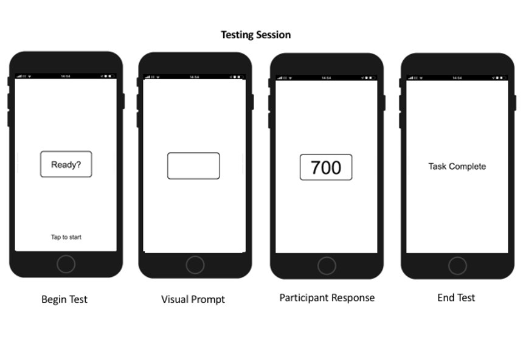
Digit Symbol Substitution Test (DSST)
In this task, you will be presented with a list of abstract symbols which are matched with numbers. When a number is shown on screen, you should draw the corresponding shape on the screen using the index finger of your dominant hand. The task begins with some text instructions which explain on how the test is completed.
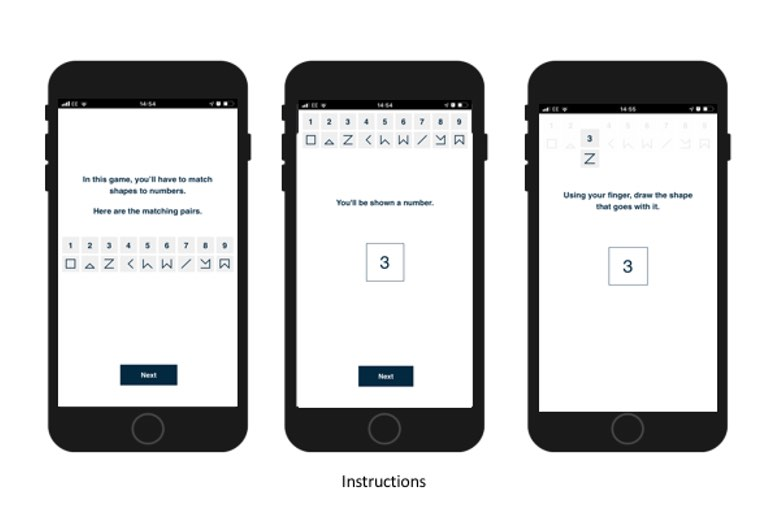
Then you are presented with a few examples for practice. When a number is highlighted on screen, then you should draw the corresponding abstract shape using your index finger on the smartphone. You are encouraged to “Try working through them quickly”.
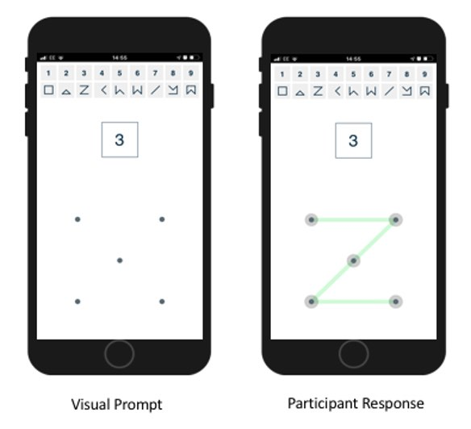
After you have completed the instructions and practice portion, the timed part of the test begins. You have to try to complete as many symbols as possible within 90 seconds.
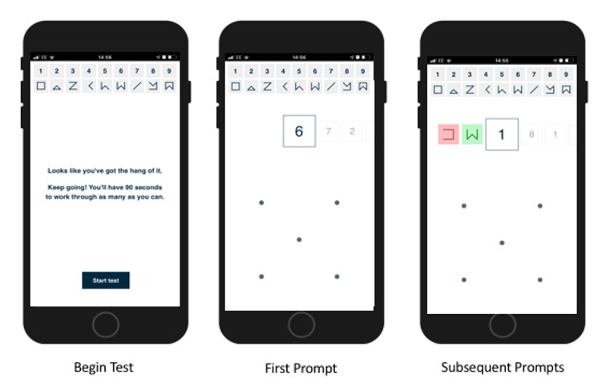
What will I need to do before I can start using this?
Any account setup required?
As you need to interact with the application daily, it is preferred to install it on your own phone. This requires you to:
- Download the app from either the Google Play or Apple App Store (as appropriate for the type of your phone) prior to your first visit with a clinician.
- During your visit, you will be provided with a 6-digit code that you can use to activate the application on your phone for use in the study. The application will then be linked to your details in the study and ready for use.
- Open the app and follow the instructions. The app will ask you to enter a 6-digit code that will be provided by clinical staff on the study site. They will use it to activate your phone for use in the study.
- The application will then be linked to your details in the study, and you are ready to go.
Needs pairing with hub-device?
N/A
Any configuration / assembly required?
N/A
Troubleshooting/FAQ
Creating a User Account
The site staff will need to log into the CANTAB Connect application on the provided iPad to search and find the entry that was created by CANTAB for this participant as outlined in the CANTAB documentation.
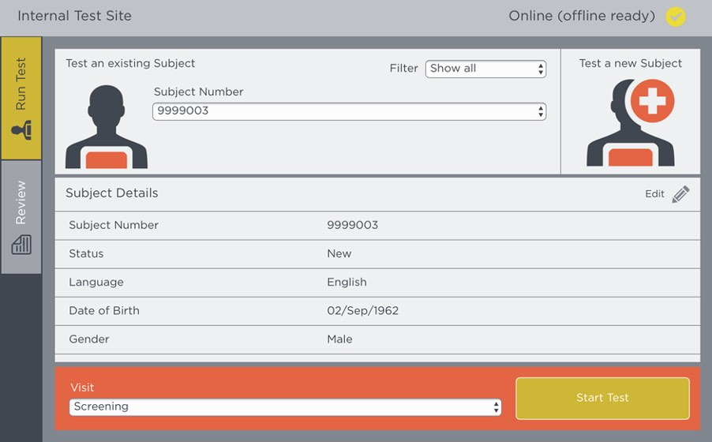
How a participant appears in the CANTAB Connection iPad application.
Ask the participant to open the CANTAB ThinkFast mobile application on their personal smartphone. If they are not logged in, a screen will appear with a 6-digit code as illustrated below.
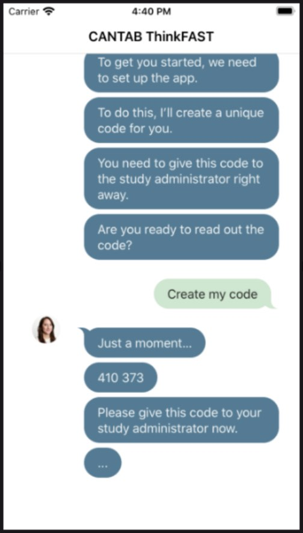
Once you open CANTAB ThinkFast, you can request a new code.
From CANTAB Connect, click tap the dropmenu below “visit” and select “Activate by Code” and enter the 6-digit code that was generated from the mobile application on the participant’s phone. This will link user you created in CANTAB Connect app to the participant’s mobile smartphone.
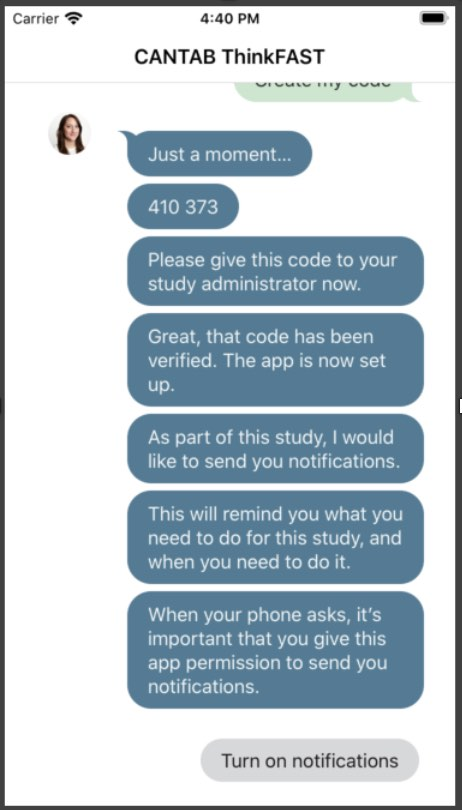
You should use this code generated by the chat service to authenticate with the CANTAB iPad application.
The device / app seems to have stopped working: what should I do?
If the CANTAB ThinkFAST app stops working, please close and reopen the application.
Battery?
N/A
Connectivity issues?
Internet connection will not impact use of the mobile application but is required to upload your results. The mobile application will upload your results daily, so you do not have to manually do this.
Need to restart or log in again?
N/A
Using the device / app is uncomfortable to me: what can I do?
Adjust wear style?
N/A
Adjust usage pattern?
N/A
Device return
What do I do when a period of device use is over?
N/A
Before the device is returned or disposed of: does any data need to be transferred?
CANTAB ThinkFAST will automatically transfer your responses from your phone to a remote server when you have an internet connection.
Do I need to return the device somewhere?
N/A